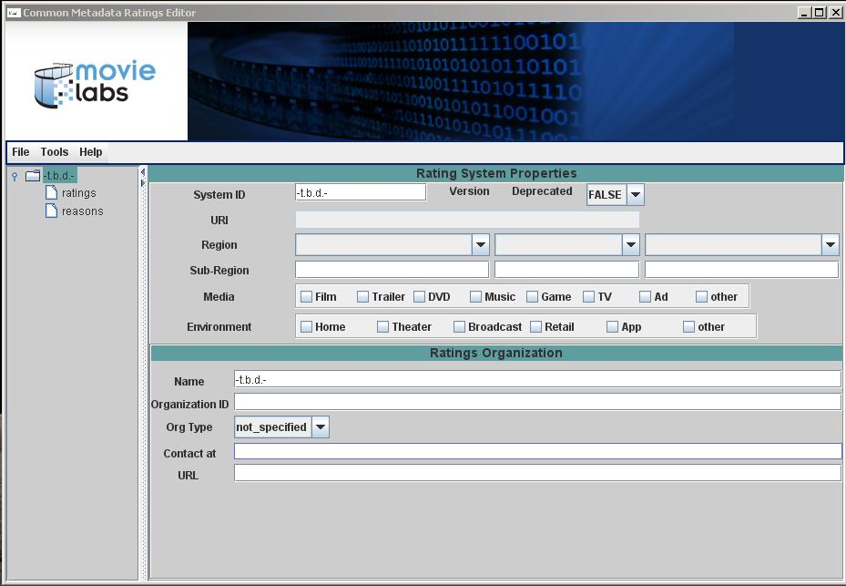
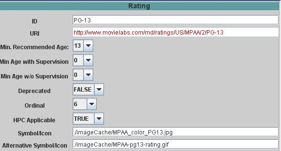
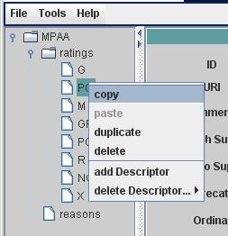
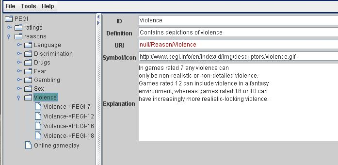
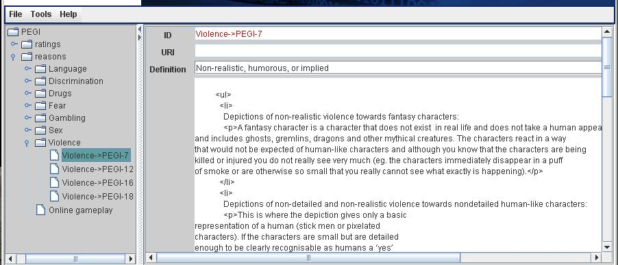
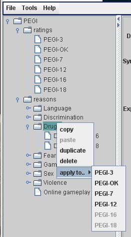

Introduction
This is the on-line help documentation for the Movie Labs Common Metadata Ratings Editor. The editor may be used to:
-
create or modify a formal XML specification of a content rating systems,
-
validate an XML specification created by a 3rd party
-
generate from a set of specification HTML and XML products intended for usage by parental control systems, content distribution channels, and other external parties.
Individuals not familiar with the Movie Labs Common Metadata Ratings, the associated schema, or the intended usage, should consult the documentation available at http://www.movielabs.com/md/ratings/index.html before proceeding.
Available Documentation
Installation
Requirements
The Editor is Java-based. The user's runtime environment must, therefore, include a Java JRE in the path. The minimum recommended JRE is 1.6.
All required supporting jars are provided with the distribution.
Generation of HTML from the XML specifications does, however, require that the user obtain a valid license for Saxon. This is available at http://www.saxonica.com/. Either the Professional (PE) or Enterprise (EE) license may be used. The minimum required version is 9.5.
The Editor may be used in either a Windows, MacOS, or Linux environment once the proper Java environment has been provided.
Installing
Unpack the distribution into any directory. To run the editor,
- open a terminal window
- cd to the install location
- enter the command java -jar ./cmr-editor.jar
Creating a New Rating System
Use the File _> New.. menu item to create a new Rating System. The initial display will show an empty Rating Systems Properties panel:

This panel is used to enter the information pertaining to :
-
the intended scope of usage (e.g., type of media, viewing environment, etc.)
-
the organization responsible for the specification, and
-
the regions in which the rating system is in use.
One of the field shown, the URI, is not editable. This field is automatically generated using the data specified for other fields.
Specifying a System ID:
The first step in filling in the required information is to enter a System ID (e.g., MPAA, OFLC, BBFA). Special characters should be avoided. Upon pressing Enter the new information is used to update both the URI field and navigation tree shown in the left-hand panel:

Regions of Usage:
The next step is to enter at least one Region of usage. Up to three regions may be specified using the editor. If additional Regions are required they must be added by directly editing the XML file. Additional points to note are:
-
The first Region entered will be considered the primary and will be included as part of the auto-generated URI.
-
Sub-regions may be specified (e.g., a state or provence within a country).The usage of sub-regions has no effect on the generation of the URI
-
Two special Regions are included in the drop-down menus: Global and European Union
The figure below shows the result of specifying three regions of adoption, the first of which is limited to a specific sub-region (i.e., Alaska). Note that the URI has been modified to include the designator 'US' due to the specification of the United States as the first, and therefore primary, Region.

Scope of Usage
The "scope of usage" indicates the types of media the Rating System covers, as well as the applicable distribution modes. For example, one Rating System might be intended solely for broadcast TV while another is intended to apply to the retail sale of DVDs, games, and music. Selection is via the provided checkboxes and multiple selections may be made in either category.
Organizational Information
The last step is to fill in information regarding the organization responsible for a system. This is optional but highly recommended. The following picture shows the entry for the MPAA:

Adding or Deleting a Rating
To add a new Rating to a system, use the navigation tree shown in the left-hand panel. Right-click on the 'ratings' node and then select "add new rating" from the popup menu. A new Rating will be added to the tree and an empty Rating panel will be displayed. The panel is shown here with the information used to specify the MPAA PG-13 rating:

Key points to note are:
-
all fields and labels have tooltips so a brief explanation of specific field's purpose can easily be obtained. More detailed help may be obtained by accessing this document via the Help menu item.
-
the URI is auto-generated and may not be directly edited.
A Rating may also be created by copying an existing Rating. To do so, first select use the navigation tree to select an existing Rating, than use the right-click to access the popup menu:

Use the duplicate menu item to insert an exact copy immediately before the selected Rating. To insert a new Rating elsewhere,
-
first select and copy a Rating
-
next select the rating you wish to insert the copy before.
-
finally, paste the copy in the selected location.
Note that this same popup menu mechanism is used to delete a Rating.
Rating Descriptors
The Rating Descriptor is used to define human-readable labels, definitions, and explanatory text for each Rating. A Rating element may provide multilingual support via the incorporation more than one Descriptor. (e.g., one in English and another in French). The figure below shows an example of just this type of bilingual support.

At least one Descriptor must be specified for each Rating. Adding (or deleting) a Descriptor is handled via the same popup menu used to copy and paste a rating:
Adding a Descriptor will result in a popup dialog be displayed that allows the user to specify the language that will be used. Descriptors are displayed in an accordion pane If multiple Descriptors are defined, they will be listed one above the other in the order in which they are added. To select one simply click on the appropriate header. For example, in the case of the French and English descriptors shown above, clicking on the bar labeled "English" will collapse the French Descriptor and open up the English one.
Reasons & Criteria
Rating agencies assess media using a variety of criteria such as the use of language or the amount and type of violence or sexual behavior that is shown. This means we wish differentiate between the general categories (e.g., sex, violence) and the assessment criteria as to what is or is not acceptable for a given rating (e.g., full frontal nudity is only justification for a minimum rating of R). The former are defined via the Reason element and the later via the Criteria element.
The distinctions, as well as the applicable Editor interfaces, are illustrated in the following two screen captures. The example is taken from the PEGI Rating System and describes how violence in video games is assessed. The first screen shows the data entered for the overall category of "Violence'. This includes the general description of what this category is about, as well as an (optional) URL pointing to the symbol used to denote this category.

The second screen, shown below, indicates the level and types of violence that will result in a PEGI-7 rating:

Adding or Deleting a Reason
The mechanism used to add a new Reason to a system is identical to the one used to add a Rating. Use the navigation tree shown in the left-hand panel. Right-click on the 'reasons' node and then select "add new reason" from the popup menu. A new Reason will be added to the tree and an empty Reason panel will be displayed. Copying, pasting, or deleting of a Reason is also handled in a manner identical to that used for Ratings.
Specifying Criteria
As was previously noted, Criteria elements are used to provide information about how a Reason (i.e., classification factor) is assessed in the context of a specific level of Rating. Another way to view Criteria is as an association between a specific Rating and a specific Reason. For this reason, the mechanisms for adding and deleting Criteria are different from the ones used to work with Ratings and Reasons:
-
A Criteria linking a Reason to a Rating may only be added after both the Reason and Rating have been added.
-
Criteria may not be copied and pasted.
To add a new Criteria you need to first select the appropriate Reason, then select the Rating from the list shown in the popup menu. For example, the following shows the navigation tree for the PEGI Rating System:

The tree has been expanded to display the list of defined Ratings, as well as sub-section specific to the 'Drugs' category. At this point only two criteria have been specified: one mapping the category to the PEGI-16 rating and another mapping to the PEGI-18 rating. Right-clicking on the Drugs node will display the following popup menu:

Only those Ratings that have not yet been mapped to the selected Reason are enabled for selection. Selecting one of these will result in a new node being added to the tree. At this point the Criteria editing panel will be shown in the Editor's main pane and a definitions and explanatory text may be entered. Note, however, that neither the ID nor the URI fields of a Criteria are editable by the user.
Saving a Specification
Save a specification using the standard File -> Save... menu item. By default a new specification is assigned a file name based on it's System ID and primary Region. For example, the MPAA specification identifies the primary region as the United States so the default file name is US_MPAA_Ratings.xml. While the file name may be changed by the user, doing so may cause unforeseen problems in the downstream products generated from the specifications.
Equally important to the product generation process is where files get saved. By default, this will be the {install-dir}/resources/xml sub-directory. While the XML specification may be saved in any directory you wish, only the XML files in the default location will be used when generating downstream products.
Generating Products
The Editor will generate the various HTML and XML "products" that are provided on the Movie Labs web site. To do so, you use the Generate HTML menu item provided in the Tools menu. You will be prompted to select a directory in which the generated files will be saved..